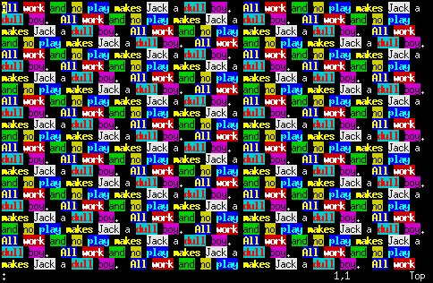

Google Summer of Code Blog (from 2007)
Friday, July 6, 2007
It's alive!
Now nothing will stop you from going absolutely crazy with highlights in Vim:

As hinted in my previous post, the bug
- Allow more than 3 ":match" items.
turned out to be more of a feature addition than a bug. The limit was literally
hardcoded everywhere in the Vim source code and major changes were unavoidable.
I have implemented the functionality as functions, as it will be used mostly by
scripts (probably). Example of usage:
:highlight MyGroup1 ctermfg=yellow ctermbg=blue
:highlight MyGroup2 ctermfg=white ctermbg=red
:let m1 = matchadd("MyGroup1", "TODO")
:let m2 = matchadd("MyGroup2", "FIXME")
:call matchdelete(m1)
:call matchdelete(m2)
I still need to change the underlying code for the old :match command, so it
will use the new data structures transparently. Also, I plan to create a
matchlist function and to write some tests for all this new stuff in Vim's
testdir.
All posts
2007-08-03 - What I've fixed since the previous post
2007-07-06 - It's alive!
2007-07-05 - Finally I'm hacking!
2007-04-16 - First post
|